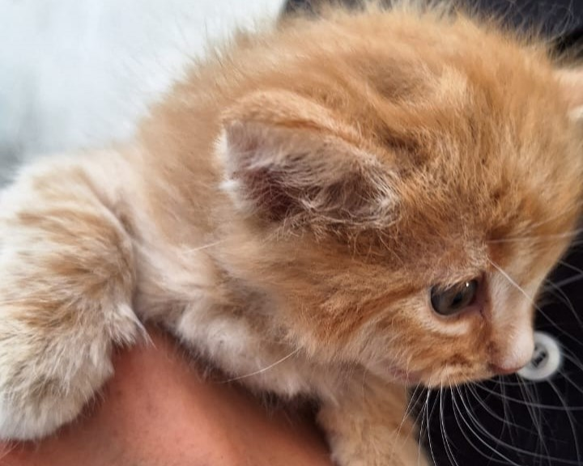
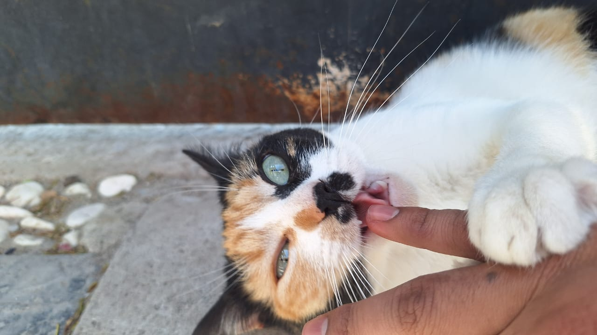
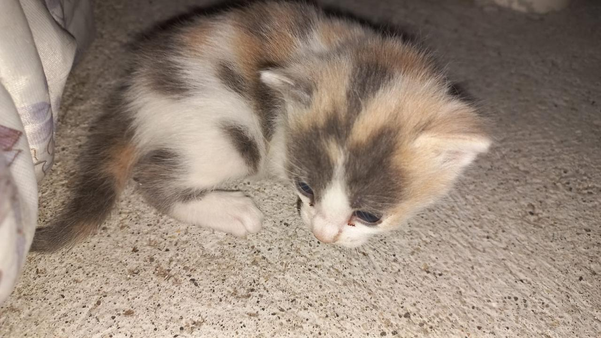
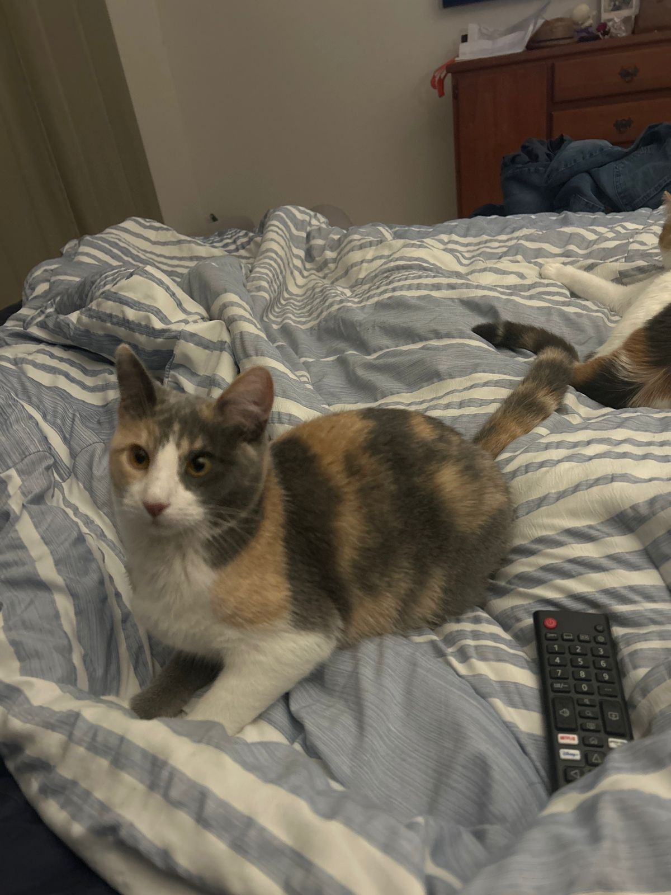

Familia de mi gata :D
Shaula Suhail Paz Garay - A01712013 - a01712013@tec.mx

Abuelo (?
| Nombre: Maximiliano Apodo: Max Especie: Humano |
Max adoptó multiples gatitos que con el tiempo se multiplicaron por sí mismos. Le gustan los animalitos, por lo que está estudiando veterinaria. Después de que sus gatos tuvieran retoñitos, dió en adopción a muchos de estos, encontrando diversas familias para ellos. Una de esas gatitas dades en adopción fue la Apestosa. Actualmente, los padres de la Apestosa siguen a su cuidado, se les ve felices y sanos. |
Papá y Mamá
  |
Nombre: Mittens Apodo: N/A Especie: Gato Nombre: Sog Apodo: N/A Especie: Gato |
Estos gatitos se enamoraron hace tiempo. Tuvieron varios hijos, entre ellos la Apestosa. Aunque no sabemos a ciencia cierta que la camada de la Apestosa es de este gato, la fé nos impulsa a creerlo.
Este gato se hizo responsable de los gatitos que tuvo Mittens, esto después de tener un tema con la camada de la madrastra. Hubo un cambio de personaje, pues el padre era un desnaturalizado e incluso esposo agresor,
pero después del drama entró en razón, y no se le puede hacer responder por sus actos por ser un gato. Actualmente los dos viven tranquilos con Max. Mittens crió a los hijos de la otra gata a pesar de que esta les dio la espalda, siendo no solo madre responsable, sino madrastra responsable y presente. Los gatos crecieron como hermanos debido a que sus crias no nacieron con mucho tiempo de diferencia. Las cosas están más tranquilas ahora y todos viven en paz y harmonía. |
Apestosa
 |
Nombre: Apestosa Apodos: Nix, Miau, Hermosa Especie: Gato |
Adoptada al mes de nacida, la Apestosa tiene 2 años viviendo en mi casa. Es muy tranquila y le gusta salir al patio a pasar el tiempo, sin embargo no escapa. No juega mucho y pasa la mayor parte del
tiempo durmiendo o comiendo. Nuestra primer gata, que nos enseñó lo que es lidiar con rasguños en los muebles, limpiar cajas de arena y ser sirvientes de una mascota. Le gusta entrar a cajas cuando tiene la oportunidad y en general evita los problemas, pero la Mi logra sacarla de sus casillas a menudo, aunque la Apestosa no parece tener resentimiento, solo precaución para no tener que lidiar con la violencia tan a menudo. |
Hermanos
 |
 | |
 |
Madrastra
 |
Nombre: Scott Apodo: N/A Especie: Gato |
La madrastra de la Apestosa tuvo hijos del padre de la Apestosa, pero decidió que no sería una madre presente, por lo que dejó a sus hijos a su suerte. La mamá de la Apestosa decidió cuidarlos Actualmente sigue viviendo con Max, aunque va por su propio lado sin ser parte de la familia feliz de gatos que vive ahí. El padre de la Apestosa se comportó violentamente durante su "matrimonio" pero hoy en día viven en paz. |
Media Hermana
Nombre: Chiquitín Apodo: N/A Especie: Gato |
No se posee mucha información, pero se ve linda. |
Papás Adoptivos
 |
Nombre: Bertha Apodo: Madre Mía Especie: Humano |
Alimenta regularmente a la Apestosa. Le corta la fruta porque la señorita no come cualquier cosa y le gusta esclavizar humanos. Casada felizmente con mi padre. Eligió a la Apestosa porque tiene
los colores de Perro y había que combinar. Ama mucho a sus mascotas y se preocupa por los tres. Le gusta pasar tiempo con ellos y se sabe todos sus gustos alimenticios. Se resignó a no tener una sala estéticamente perfecta por los arañazos y derrumbes de adornos, pero es feliz con sus gatas y perro. |
 |
Nombre: Alejandro Apodo: Padre Mío Especie: Humano |
Aunque ama a los tres, es evidente para todos su fascinación con las gatas. Suele consentirlas con juguetes y comprando cualquier cosa que pueda gustarles. Presume a sus gatas en su trabajo a tal
punto que pueden ser consideradas celebridades. Muchos dirían que "las molesta mucho", pero es su forma de mostrar amor. Tiene una relación complicada con las gatas porque no son especialmente amorosas, pero esto no significa que sea una relación mala. |
Hermanos Adoptivos
Nombre: Mi Apodo: Hera, Pelusa Especie: Gato |
Ama la destrucción y atacar a todos, especialmente a la Apestosa. Fue adoptada hace menos de un año. Abandonada por su madre fue encontrada debajo de un automóvil, afortunadamente hizo ruido antes de que alguien fuera a usar el vehículo. Sus habitos como gata son muy extraños, pues a pesar de pasar tiempo con la Apestosa, parece que aún no se acostumbra a ser una gata. Fue anunciada por toda la escuela buscando hogar, pero la fuí a conocer y decidí convencer a mis papás. Increíblemente lo logré y tengo muchos rasguños como consecuencia. Inesperadamente, siempre huele bien, específicamente a bebé. | |
 |
Nombre: Perro Apodo: Kirón Especie: Perro |
Un Beagle adoptado 2013 al mes y medio de nacido. Lo adoptamos en Tampico Tamaulipas, pero vivimos un año sin él, pues mis abuelos lo cuidaron en lo que nos mudabamos de estado. Debido a su raza ladra muy alto, pero nos hemos acostumbrado con el tiempo. Ha tenido más de un accidente por su propia culpa: una vez por saltar mucho y otra por querer pasar debajo de una reja y jalarse accidentalmente una pata. Intentamos mantenerlo lejos de situaciones extrañas por esto mismo. Nuestra mascota más antigua y que más tiempo nos ha acompañado. Esperamos compartir mucho más tiempo con él. Es muy tranquilo, a tal punto de dejar a los pajaritos comer de su plato y beber de su agua. |
Album
 |
 |
 |
|   |
 |
  |
 |
 |
 |
 |
 |
 |
 |
 |
Preguntas
Laboratorio 1
- ¿Cuál es la diferencia entre Internet y la World Wide Web?
El internet es una red de computadoras conectadas entre sí mientras que la World Wide Web es una colección de páginas que se asienta en el internet. [1] - ¿Cuáles son las partes de un URL?
Esquema, subdominio, dominio de segundo nivel, dominio de nivel superior, subdirectorio. [2] - ¿Cuál es el propósito de los métodos HTTP: GET, HEAD, POST, PUT, PATCH, DELETE?
GET: recupera datos
HEAD: recupera datos pero sin el cuerpo de la respuesta
POST: envía una entidad a unrecurso en específico
PUT: reemplaza las representaciones actuales con la carga útil de la petición
PATCH: aplica modificaciones parciales a un recurso
DELETE: borra el recurso [3] - ¿Qué método HTTP se debe utilizar al enviar un formulario HTML, por ejemplo cuando ingresas tu usuario y contraseña en algún sitio? ¿Por qué?
Se debe usar POST, pues este no enexa los datos a la URL como es el caso de GET [4] - ¿Qué método HTTP se utiliza cuando a través de un navegador web se accede a una página a través de un URL?
GET, pues este es el encargado de solicitar información de un servidor web y obtiene el contenido asociado con esa URL. [5] - Un servidor web devuelve una respuesta HTTP con código 200. ¿Qué significa esto? ¿Ocurrió algún error?
Significa que la solicitud se proceso correctamente y se devuelve el contenido solicitado, lo que indica que no ha ocurrido ningún error. [6] - ¿Es responsabilidad del desarrollador corregir un sitio web si un usuario reporta que intentó acceder al sitio y se encontró con un error 404? ¿Por qué?
Usualmente no, pues puede indicar varias situaciones, como que el contenido fue movido, eliminado o no debe ser accedido por el usuario. - ¿Es responsabilidad del desarrollador corregir un sitio web si un usuario reporta que intentó acceder al sitio y se encontró con un error 500? ¿Por qué?
Sí, significa que hubo un error de acceso al servidor donde se encuentra almacenados los archivosdel sitio web. [7] - ¿Qué significa que un atributo HTML5 esté depreciado o desaprobado (deprecated)? Menciona algunos elementos de HTML 4 que en HTML5 estén desaprobados.
Significa que no se recomienda usarlos, algunos ejemplos son: APPLET, BASEFONT, CENTER, DIR, FONT, ISINDEX, MENU, S, STRIKE y U. [8] - ¿Cuáles son las diferencias principales entre HTML 4 y HTML5?
HTML 5 es más dinámico, e incluye elementos multimedia. HTML 4 solía ser estático, cosa que no es necesaria con HTML 5. [9] - ¿Qué componentes de estructura y estilo tiene una tabla?
Estructura: encabezados de columna, columnas, filas, leyenda, cuerpo, pie de tabla, celda. Estilo: color de borde, color de celda, ancho, relleno, etc. [10] - ¿Cuáles son los principales controles de una forma HTML5?
Input, select, button. - ¿Qué tanto soporte HTML5 tiene el navegador que utilizas? Puedes utilizar la siguiente página para descubrirlo: http://html5test.com/ (Al responder la pregunta recuerda poner el navegador que utilizas)
528/555 (Chrome) en https://html5test.co/results/desktop.html - Sobre el ciclo de vida y desarrollo de los sistemas de información:
¿Cuál es el ciclo de vida de los sistemas de información?
¿Cuál es el ciclo de desarrollo de sistemas de información?
Planificación, análisis, diseño, implementación, pruebas, instalación o despliegue, uso y mantenimiento, retiro o desmantelamiento. [11]
Laboratorio 3
- Como ingeniero de software ¿cuál es tu recomendación sobre el uso de !important en un CSS?
No sobreusarlo. Se tiene que tener en claro que debe ser marcado con !important ¿, una manera de hacerlo es clasificar las prioridades, si es necesario, usar otros recursos para marcar su importancia. - Si se pone una imagen de fondo en una página HTML, ¿por qué debe escogerse con cuidado?
La imagen se puede distorcionar, tene run mal contraste o combinación de colores. Puede interferir en el uso de la página web o hacer difícil la lectura, además de tener en cuenta las implicaciones de peso y fuente de esta imagen. - Como ingeniero de software, ¿cuál es tu recomendación al elegir las unidades de un propiedad de estilo entre %, px y pt?
Al usar % se puede escalar la página de mejor manera, pues se basa en el tamaño de la pantalla en vez de tener un tamaño definido. Aunque este es conveniente, tiene fallas y hay que hacer pruebas en diferentes pantallas si es que esta es la intención, por otro lado, si se va a escalar es recomendable con combinar % con pt y px. - ¿Por qué el uso de una versión minimizada del CSS mejora el rendimiento del sitio?
Es más ligero porque elimina caracteres innecesarios y comprimirlo a una sola línea sin espacios.
Referencias
[1] Redacción. (2019, 12 marzo). ¿Cuál es la diferencia entre internet y la web? (y por qué muchos las confunden). BBC News Mundo. https://www.bbc.com/mundo/noticias-47538812[2] Guía básica: las 10 partes de una URL | Mailchimp. (s. f.). Mailchimp. https://mailchimp.com/es/resources/parts-of-a-url/
[3] Métodos de petición HTTP - HTTP | MDN. (2023, 24 julio). MDN Web Docs. https://developer.mozilla.org/es/docs/Web/HTTP/Methods
[4] Sending form data - Aprende desarrollo web | MDN. (s. f.). MDN Web Docs. https://developer.mozilla.org/es/docs/Learn_web_development/Extensions/Forms/Sending_and_retrieving_form_data
[5] Kinsta. (2022, 19 diciembre). ¿Qué es una Petición HTTP? Kinsta®. https://kinsta.com/es/base-de-conocimiento/que-es-una-peticion-http/
[6] Team, W. (2023, 16 marzo). What Is a 200 Status Code? WebFX. https://www.webfx.com/web-development/glossary/http-status-codes/what-is-a-200-status-code/
[7] ¿Qué es error 500? | one.com. (2023, 7 septiembre). one.com. https://www.one.com/es/hosting/que-es-error-500
[8] Cambios en HTML 4. (s. f.). http://html.conclase.net/w3c/html401-es/appendix/changes.html
[9] Barron, B. (2025, 14 febrero). HTML vs HTML5: Conoce las diferencias cruciales entre ellos. Kinsta®. https://kinsta.com/es/blog/html-vs-html5/
[10] Marco, B. S. (s. f.). Tablas. HTML. Páginas web HTML y hojas de estilo CSS. Bartolomé Sintes Marco. www.mclibre.org. https://www.mclibre.org/consultar/htmlcss/html/html-tablas.html
[11] Guerrero, A. C. (2015, 20 julio). Ciclo de vida de un sistema de información • gestiopolis. Gestiopolis. https://www.gestiopolis.com/ciclo-de-vida-de-un-sistema-de-informacion/